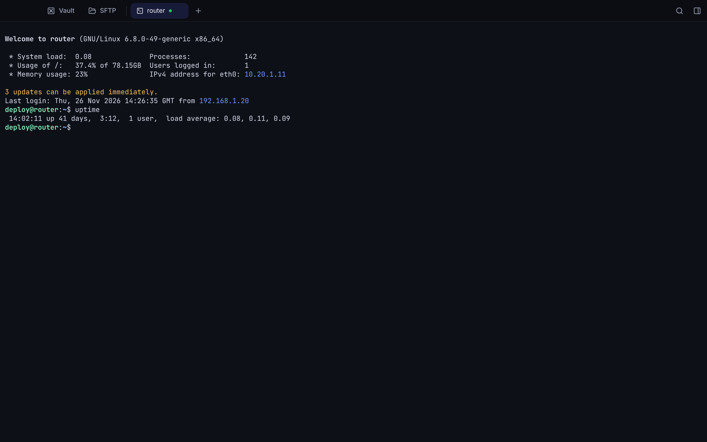
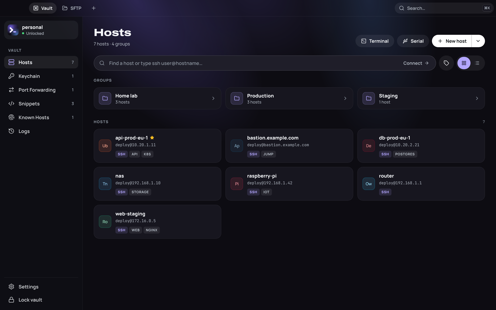
Vault · hosts, groups and tags in an encrypted vault
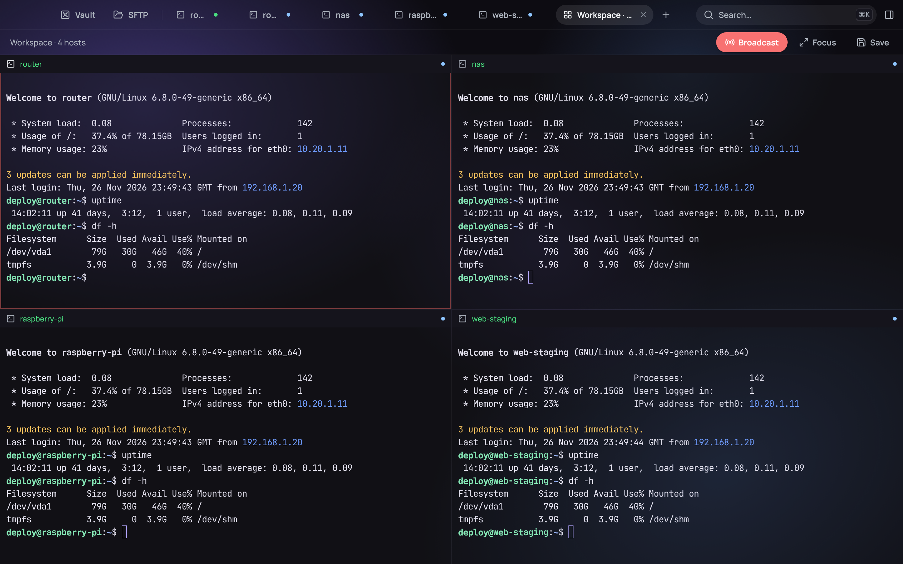
Workspaces · split terminals with broadcast input
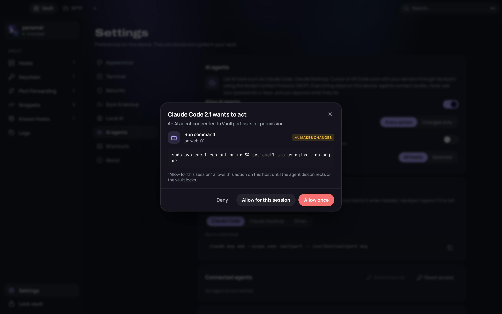
AI agents · every action waits for your approval
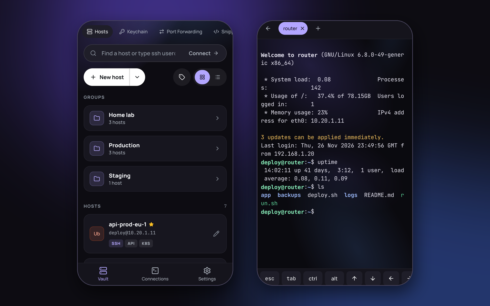
Phones & tablets · the same vault, touch-first
Pulse, the default terminal theme: see-through over the app's living background glow, side panel included.
